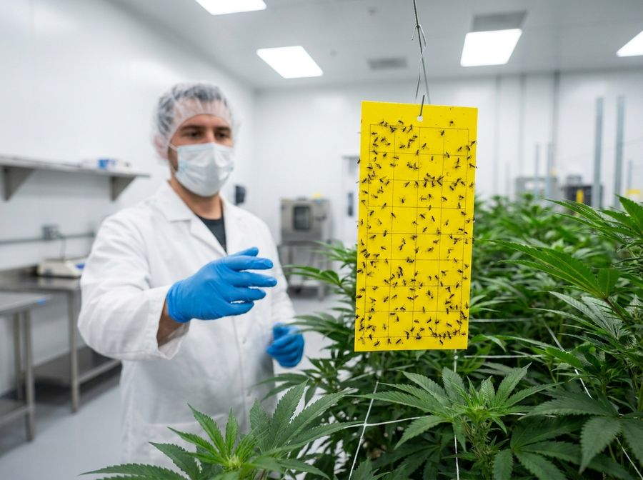
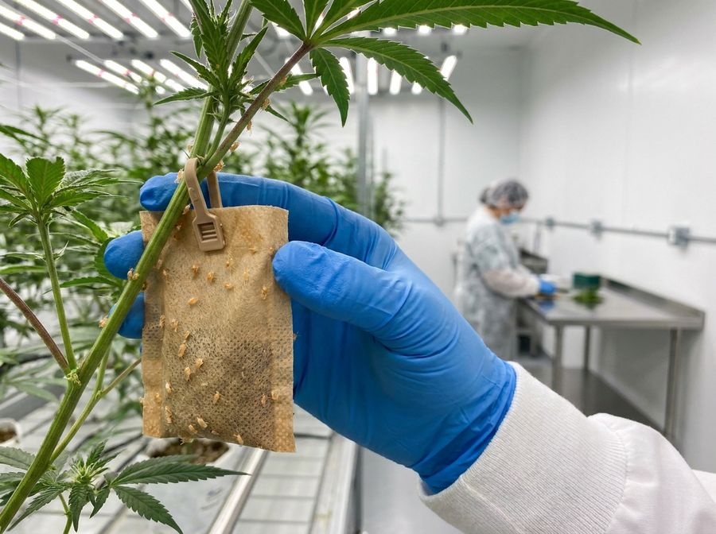
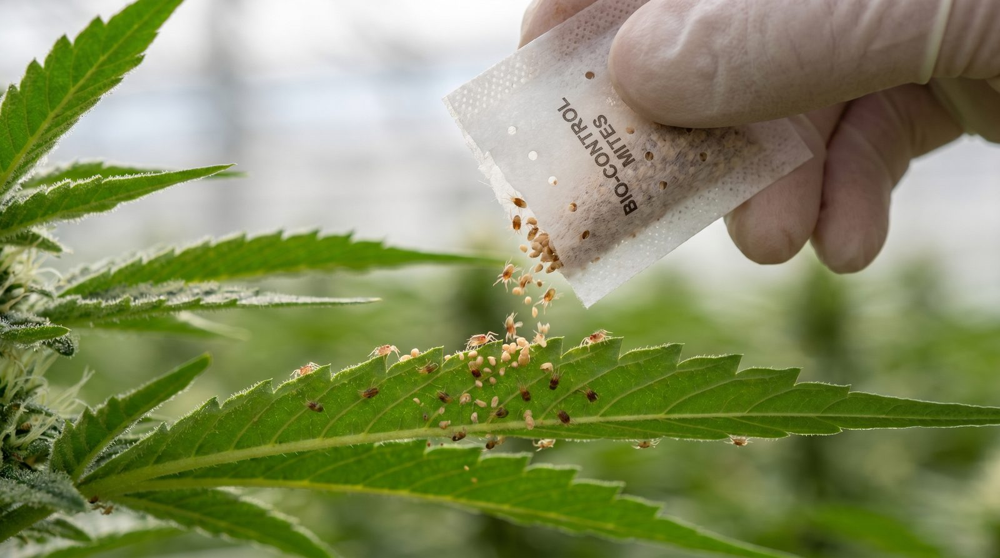
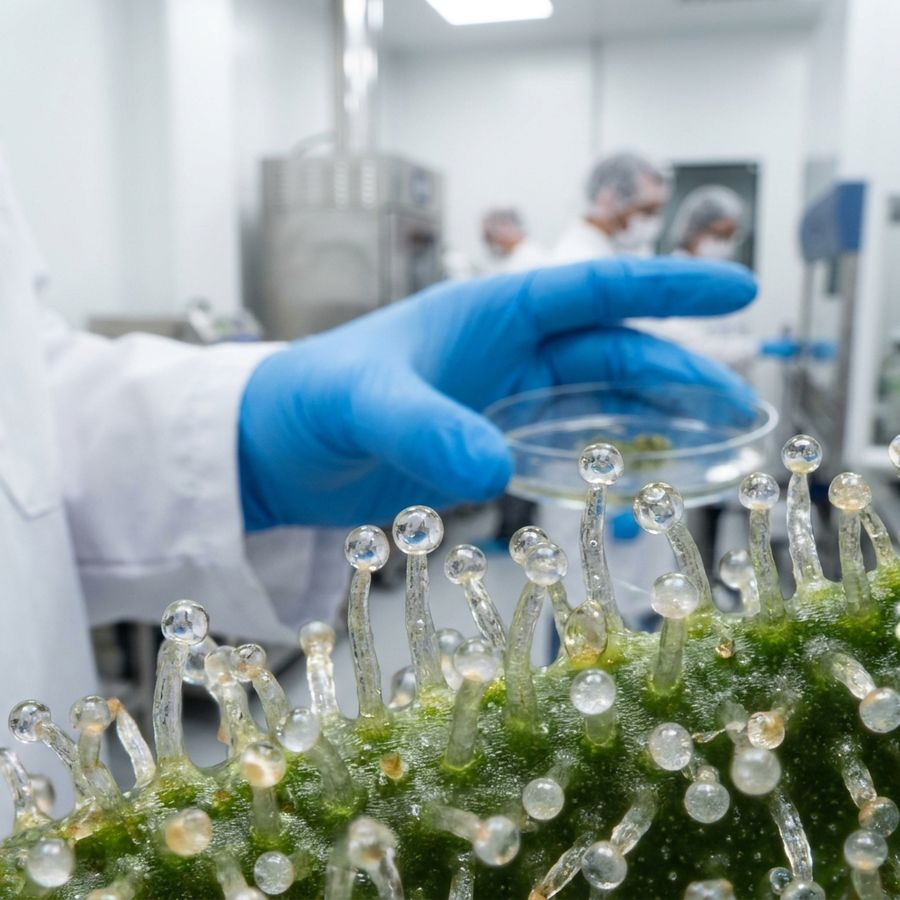
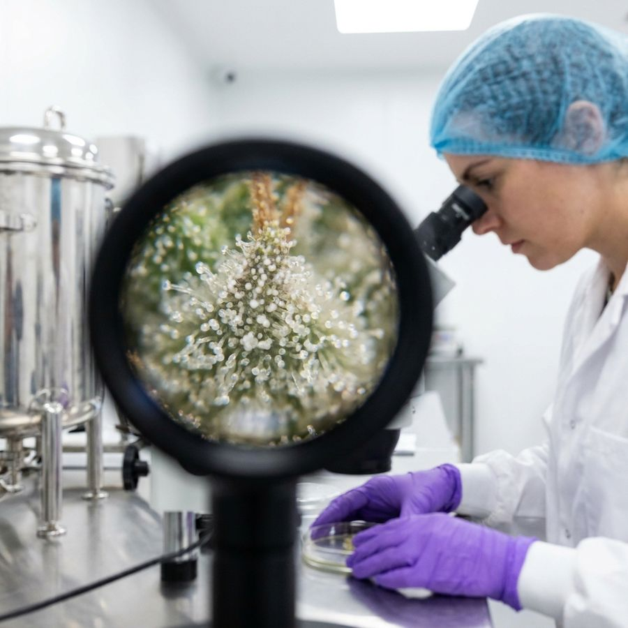
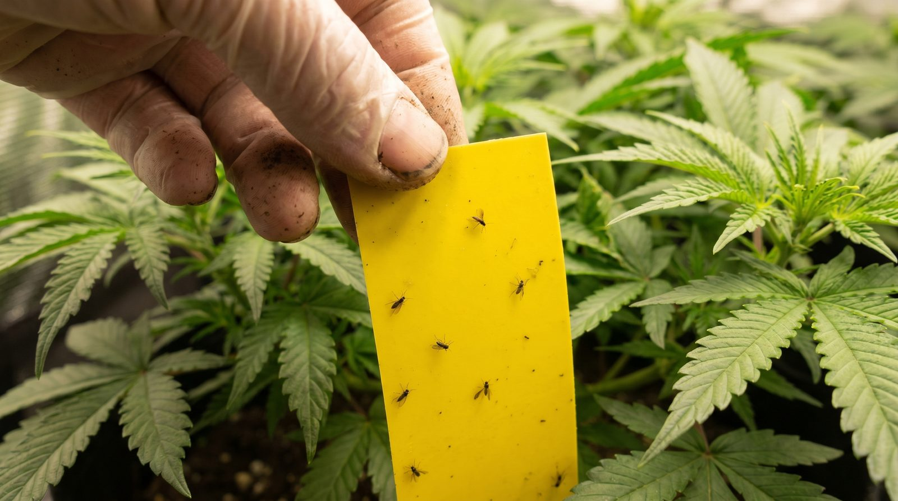

Integrated pest management: a working SOP
A plain-language standard operating procedure for keeping pests and disease out of an indoor cannabis grow. How to scout, when to act, how to use good bugs and sprays, and how to keep records that hold up.
What IPM is and why a grow lives or dies by it
Integrated Pest Management (IPM) is the routine of catching pests and diseases before they spread, using the lightest control that works and escalating only when you have to. It is not one spray or one bug release. It is a loop: evaluate, decide, control, repeat, run across every room from mothers and clones through veg and flower.
One missed mite colony or one powdery-mildew outbreak can destroy an entire harvest[1], and in a regulated facility a pesticide misstep can fail residue testing and bin the whole batch[2]. This guide assumes you know nothing and defines every term as it appears.
Use the lightest effective control first and escalate to sprays only when thresholds force it. A small problem caught early is cheap. A missed one can cost the whole crop.
Every term you need, defined once
Here is the language before the procedure. You do not need to memorise it. Each term comes back in context below.


Scouting: find it before it finds you
Scouting is the engine of IPM. Everything downstream depends on catching pests early. A practical baseline is for the room lead to visually inspect at least 5 percent of the room at every check, logging any finding immediately, while dedicated IPM scouts do deeper precision inspections[1].
Work a fixed route every time: scout the tables and substrate for frass and debris, then the trunk and stems, then the undersides of leaves (where mites and thrips hide), then leaf tops. Yellow sticky traps at the base of the stem and at canopy height give an early-warning catch of stray fungus gnats, aphids, and thrips.
Russet mites and broad mites are invisible to the naked eye. Use a jeweler's loupe to confirm tiny pests before you decide what to do.



Action thresholds: knowing exactly when to act
A threshold turns observation into a decision so nobody has to guess. A workable two-tier model reflects a common commercial action approach[1]. At the first sign of a single mite, aphid, or similar pest, assume there are more: scout the entire room, begin exclusion measures (limit who enters), and line up biological controls. Once more than 3 percent of a room is affected, escalate to approved pesticide applications, subject to growth stage and management sign-off.
Growth stage is itself a hard gate. In a regulated soilless facility, plants are treated only from mothering through day 21 of flower, with no foliar treatment after buds form (a light antimicrobial rinse may be the only exception)[2]. For a serious infestation that appears after day 21 of flower, pull and destroy the affected plants rather than spray.
Restrict sulphur to mothers and vegetative growth, not flowering[2]. Applied late, it taints the finished flower.
Biological controls: putting good bugs to work
Biocontrol releases predators that hunt your pests. They are harmless to the cannabis plant at every stage, and if they run out of prey they simply die off and fall away. The job is to match the predator to the pest and the conditions.
Amblyseius swirskii is a generalist that eats thrips larvae, whitefly, and broad mites and works best at 77 to 86 °F with humidity above 70 percent[3]. Phytoseiulus persimilis is a spider-mite specialist that eats up to 5 adults or 20 eggs a day but needs cooler, humid conditions[5]. Neoseiulus californicus is the tougher spider-mite option that stays active across 60 to 90 °F[4]. Stratiolaelaps scimitus is a soil-dwelling mite for fungus gnat larvae and thrips pupae, best deployed when pest pressure is still low[1].
| Predator | Target pest | Ideal temp | Ideal humidity | Type |
|---|---|---|---|---|
| A. swirskii | Thrips larvae, whitefly, broad mites | 77–86 °F | >70% | Generalist |
| P. persimilis | Spider mites (fast knockdown) | 59–77 °F | High | Specialist |
| N. californicus | Spider mites (hot/dry rooms) | 60–90 °F | Low–mod | Specialist |
| S. scimitus | Fungus gnat larvae, thrips pupae | Room temp | Moist media | Soil specialist |
Predators are harmless to the plant and to people. When the prey runs out they die off on their own. There is no residue and no withholding period.

Spray rotation and safe application
When thresholds force a spray, the rules are about residue safety and effective coverage, not improvisation. Use only products approved for cannabis in your jurisdiction, always follow the label dilution and withholding periods, and never freelance with off-list nutrients or supplements that could fail residue testing[2].
A preventative program can be as simple as a weekly foliar of an approved wash plus sulphur (1 to 3 tablespoons per litre, ideally 3, no more than once every 2 weeks, veg and mothers only), stepping up to 3 times a week curatively at low pest levels[2]. Rotate chemistries and tank-mix only combinations the labels allow, adding products in the label-specified order. Spray when the media is fully saturated so the product is not pulled into the leaves and burns them.
| Day | Product / tank-mix | Target | REI | Withholding |
|---|---|---|---|---|
| Mon | Approved wash (foliar) | General hygiene | Per label | Per label |
| Wed | Approved wash + sulphur* | Powdery mildew, mites | Per label | Per label |
| Fri | Biocontrol release | Mites / thrips | None | None |
| As needed | Approved curative (rotate class) | Active outbreak | Per label | Per label |
Spraying at full media saturation reduces foliar uptake and burn risk[2]. Time it to the irrigation transition when the substrate is wettest.
Sanitation and quarantine: stop pests at the door
Most pests are walked in, so the cheapest control is keeping them out. The biggest single entry point is footwear[1], so replace shoes or use overboots before entering grow rooms, wash hands on entry and after every break, and wear nitrile gloves at all times, changing them after breaks or after handling chemicals (when in doubt, change them).
Every incoming plant goes through quarantine: dunk or wash it in an approved foliar solution on receipt, then hold it in a separate quarantine tent for 2 or more weeks under observation before it joins the crop[1]. Treat all plant waste as hazardous: bag it in the room, weigh and log it, and move it straight to green waste. Keep equipment room-specific and cleaned after every task so a tool never carries pests between rooms.
Scissors, buckets, sprayers, and PPE stay with one room and get cleaned after every task. A shared tool is a highway for pests.
The daily routine, the decision flow, and record-keeping
Put it together as a repeatable shift routine. The daily loop is short, and the decision flow handles whatever you find.
- 1Gear up and enterChange footwear, wash hands, glove up, step through the foot bath.
- 2Walk the scout routeSubstrate, stems, leaf undersides, leaf tops, same order every day.
- 3Check and date trapsRead sticky-trap counts, write today's date, note the trend.
- 4Log every findingRecord pest IDs and damage. Uploading photos weekly is a good cadence.
- 5Run the decision flowIdentify, compare to threshold, choose monitor / biocontrol / spray / pull-and-destroy by stage and severity.
- 6Record and re-scoutLog any treatment, then compare before-and-after trap counts to confirm it worked.
| Field | What to record |
|---|---|
| Date | Day of application |
| Product | Name as on the approved list |
| Active ingredient | What it actually is |
| Dilution | Rate per label |
| Area / room | Where it went on |
| Applicator | Who sprayed |
| REI | Posted on the door |
| Withholding | Harvest hold period |
| Manager signature | Sign-off on the log |
REI signage must be posted on the room door and removed only after the interval, with the room calendar marked during and after application[6]. Good records double as proof a treatment worked. Compare trap counts before and after.
Common mistakes and what good IPM actually looks like
The frequent failures are predictable: skipping scouting until damage is visible, spraying without confirming the pest, ignoring the treatment window and spraying in late flower, sharing tools or PPE between rooms, and letting good bugs wash into the irrigation system.
| Common mistake | Correct practice |
|---|---|
| Scout only once damage shows | Scout on a fixed route every check, before damage appears |
| Spray an unidentified pest | Confirm the pest with a loupe first, then act |
| Spray in late flower | Respect the window; after day 21 serious = pull and destroy |
| Share tools / PPE between rooms | Room-specific, cleaned equipment and gloves |
| Biocontrol media into irrigation | Deploy via hanging sachets / boxes |
| Airborne fumigators in flower | Avoid entirely, they drift into bud |
| Metallic hose clamps in sprayers | Use non-metallic fittings, rust fails heavy-metals tests |
Avoid airborne fumigators entirely in a flower facility. They can drift into bud and compromise the crop[2]. Check sprayers for metallic hose clamps that can rust and fail heavy-metals testing[1].
IPM does not mean zero pests ever. It means you detect early, keep populations under threshold, and never let a problem reach the harvest. A mature program is mostly weekly scouting, sticky-trap trends, clean entry, and light preventative foliar, with curative escalation as the exception.
Build the quiet routine first and the dramatic rescues mostly disappear. Pair this SOP with the mould-risk guide for disease pressure and the airflow design guide. Clean, moving air is itself one of the best pest controls you have.
References
- Punja, Z. K. (2021). Emerging diseases of Cannabis sativa and sustainable management. Pest Management Science, 77(9), 3857-3870. https://doi.org/10.1002/ps.6307
- Scott, C., & Punja, Z. K. (2021). Evaluation of disease management approaches for powdery mildew on Cannabis sativa L. (marijuana) plants. Canadian Journal of Plant Pathology, 43(3), 394-412. https://doi.org/10.1080/07060661.2020.1836026
- Elmoghazy, M. M. E., Elsherbini, D. M. A., Mashlawi, A. M., Ibrahim, A. M., El-Mansi, A. A., & El-Sherbiny, M. (2024). Implications of temperature and prey density on predatory mite Amblyseius swirskii (Acari: Phytoseiidae) functional responses. Insects, 15(6), 444. https://doi.org/10.3390/insects15060444
- Mumtaz, M., Rahman, V. J., Saba, T., et al. (2023). Functional response of Neoseiulus californicus (Acari: Phytoseiidae) to Tetranychus urticae (Acari: Tetranychidae) at different temperatures. PeerJ, 11, e16461. https://doi.org/10.7717/peerj.16461
- Koppert Biological Systems. Phytoseiulus persimilis - Predatory Mite for Spider Mite Control (technical/product sheet). (manufacturer source, not peer-reviewed) https://www.koppert.com/crop-protection/biological-pest-control/predatory-mites/phytoseiulus-persimilis/
- U.S. Environmental Protection Agency. Notice to Workers About Pesticide Applications and Pesticide-Treated Areas (Worker Protection Standard). (manufacturer source, not peer-reviewed) https://www.epa.gov/pesticide-worker-safety/notice-workers-about-pesticide-applications-and-pesticide-treated-areas
Citations marked in-text as [n] map to this list. Peer-reviewed sources except where noted. Cannabis tissue culture is strongly genotype-dependent, verify dilutions, hormone doses and local regulations against the primary sources before relying on them.